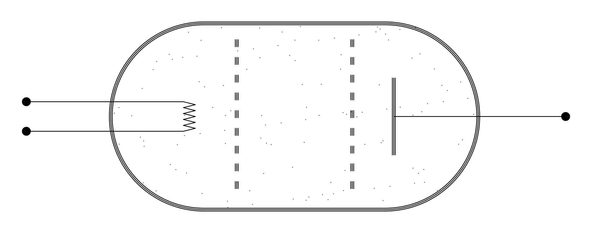
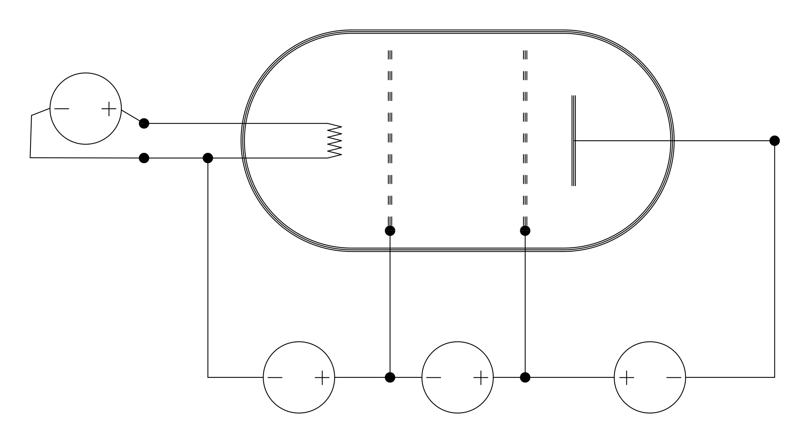
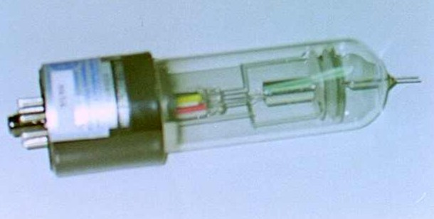
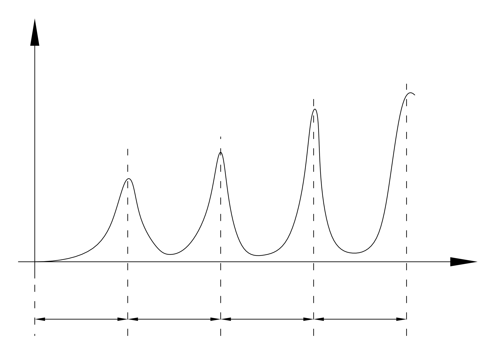
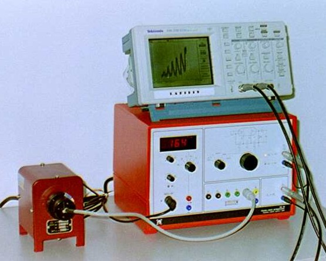

Capitolo 7
Esperimento di Franck-Hertz
In questa scheda descriveremo l’esperimento di Franck-Hertz. Questo costituisce l’esperienza più semplice con la quale si mette in evidenza la quantizzazione dell’energia degli atomi.
Per far comprendere l’importanza di questo esperimento diciamo che la Meccanica Quantistica si chiama così perché molte grandezze fisiche, come l’energia degli atomi, possono assumere solo valori quantizzati.
Descrizione dell’esperimento.
In un’ampolla di vetro è contenuto un gas costituito dal particolare tipo di atomo che si vuole analizzare; nell’ampolla sono disposti anche degli elettrodi come mostra la figura 1.

Gli elettrodi vengono alimentati come mostra la figura 2.

Il filamento A si riscalda per effetto Joule ed emette degli elettroni, questi vengono convogliati verso la griglia B dalla tensione VAB di circa 5V. Tra le due griglie B e C gli elettroni vengono accelerati dalla tensione VBC che può essere variata tra 0V e 80V. All’uscita della griglia C, gli elettroni che hanno un energia sufficiente superano la tensione negativa VCD di circa 5V e arrivano all’elettrodo D formando una corrente negativa I che viene misurata.
Lo scopo dell’esperimento è di riportare la corrente I in funzione della tensione VBC applicata tra le griglie.
Nel laboratorio didattico LAFIDIN abbiamo la possibilità di eseguire l’esperienza di Franck-Hertz per gli atomi di neon e per gli atomi di mercurio, descriviamo prima l’apparato per il neon.
Descrizione dell’apparato sperimentale per il neon.
La foto di figura 3 mostra l’ampolla di vetro contenente il neon, la figura 4 mostra l’intero apparato sperimentale.


A destra in figura 4 abbiamo il supporto per l’ampolla, a sinistra sotto abbiamo un sistema integrato che è collegato, con un unico cavo multipolo, al supporto dell’ampolla. Mediante quest’unico cavo lo strumento fornisce le tensioni per gli elettrodi e per le griglie, ed inoltre misura la corrente I. Da questo strumento integrato partono due uscite che vanno all’oscilloscopio appoggiato sopra. Un uscita porta la tensione VAB applicata tra le griglie, che viene riportata sull’asse X dell’oscilloscopio, mentre l’altra uscita porta una tensione proporzionale alla corrente I, che viene riportata sull’asse Y dell’oscilloscopio. In questo modo, facendo variare lentamente la tensione tra 0 ed 80V, sullo schermo comparirà il diagramma tensione/corrente VAB/I. La figura 5 mostra una foto dello schermo dell’oscilloscopio.

Risultati sperimentali ed interpretazione.
Da un punto di vista classico ci aspettiamo che la corrente debba crescere in modo monotòno al crescere della tensione. Invece sperimentalmente vediamo che in alcuni tratti mentre la tensione aumenta la corrente diminuisce, generando un grafico con una serie di massimi e di minimi (Fig. 6).

Inoltre si osserva che la distanza tra i massimi è più o meno costante e pari a circa 19V.
Questi risultati si possono interpretare nel seguente modo:
Gli atomi di neon hanno il primo livello energetico corrispondente a 19eV, cioè all’energia che acquista un elettrone quando cade in una differenza di potenziale di 19V.
Quando la tensione tra le griglie è minore dei primi 19V gli elettroni attraversano le griglie senza poter mai cedere nemmeno un po’ di energia agli atomi, perché la loro energia è minore di 19eV e gli atomi di neon possono prendere solo un energia “discreta” di 19eV.
Quando la tensione raggiunge i 19V alcuni elettroni alla fine del loro cammino, cioè vicino alla seconda griglia, raggiungono l’energia di 19eV che può essere ceduta agli atomi di neon, questi elettroni cedono la loro energia e rimangono bloccati privi della velocità necessaria ad attraversare la tensione negativa VCD tra la seconda griglia C e l’elettrodo D. Se ne deduce che intorno ai 19V avremo una diminuzione della corrente I.
Quando la corrente diviene maggiore di 19V ma minore di 38V, gli elettroni raggiungono un energia di 19eV in un punto intermedio tra le griglie, qui cedono quest’energia e vengono bloccati, tuttavia hanno ancora un po’ di strada da percorrere tra le griglie ed in questa strada possono essere riaccelerati in modo da poter raggiungere l’elettrodo D e contribuire al flusso di corrente. Quindi la corrente ricomincia a crescere.
Quando la tensione VBC è di 38V gli elettroni vengono prima accelerati, a metà percorso raggiungono l’energia di 19eV e vengono bloccati, poi accelerano di nuovo fino a quando, vicino alla seconda griglia, raggiungono nuovamente l’energia di 19eV e vengono bloccati. Quindi intorno ai 38V abbiamo una diminuzione della corrente.
Aumentando la tensione abbiamo ancora un aumento, fino a 57V dove vediamo una diminuzione e poi di nuovo un aumento, a 75V si inizia a vedere un’ultima diminuzione. L’esperimento viene fermato quando la tensione VBC raggiunge gli 80V.
La figura 7 mostra ingrandito quello che si vede guardando tra le due griglie quando la tensione è di 70V. Si possono osservare tre zone luminose rosse corrispondenti ai luoghi in cui gli elettroni cedono l’energia agli atomi.

Quando la tensione è minore di 19V non si vedono zone luminose. A 19V compare una prima “banda” vicino alla seconda griglia, quando si alza la tensione questa zona si sposta a sinistra verso il centro. A 38V la prima banda si troverà a metà percorso tra le due griglie, e si inizierà a vedere una seconda banda vicino alla griglia di arrivo. Alzando ancora la tensione queste due zone si sposteranno a sinistra ed a 57V si vedrà la terza zona nascere vicino alla seconda griglia. A 70V si vede l’immagine che abbiamo riportato, ed a 80V si vedrà una quarta zona non ancora sviluppata vicino alla griglia.
Queste zone luminescenti sono dovute al fatto che, quando gli atomi assorbono una certa quantità di energia, non la mantengono a lungo e dopo pochissimo tempo la restituiscono sotto forma di onde elettromagnetiche, cioè di luce. Ci occuperemo di questo fenomeno di emissione approfonditamente nella decima scheda.
Descrizione dell’apparato sperimentale per il mercurio.
Le foto nelle figure 8 e 9 mostrano l’apparato sperimentale per il mercurio.


L’ampolla contiene mercurio allo stato liquido, quindi per ottenere un gas si deve riscaldare a circa 160(C. Per riscaldare abbiamo un fornetto elettrico rappresentato a sinistra nelle figure 8 e 9. Per mantenere la temperatura costante c’è un sistema di regolazione contenuto nel sistema integrato raffigurato a destra, questo sistema misura la temperatura mediante una termocoppia raffigurata vicino al fornetto nella figura 8. Inoltre il sistema integrato fornisce le tensioni per alimentare gli elettrodi dell’ampolla, e misura la corrente I dovuta al transito degli elettroni.
La tensione tra le griglie e la corrente vengono riportate rispettivamente sugli assi X ed Y dell’oscilloscopio. Variando la tensione di accelerazione tra 0 e 30V si ottiene il grafico tensione corrente riportato in figura 10. Si osservono sei massimi con una distanza di circa 6V.

Altre immagini del capitolo